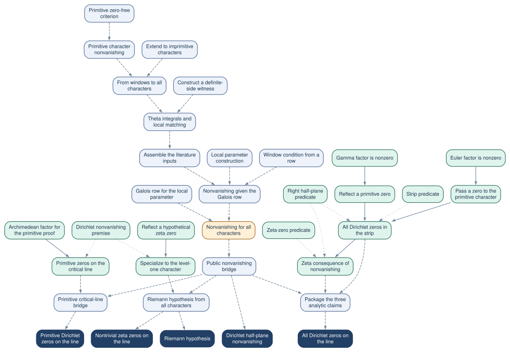
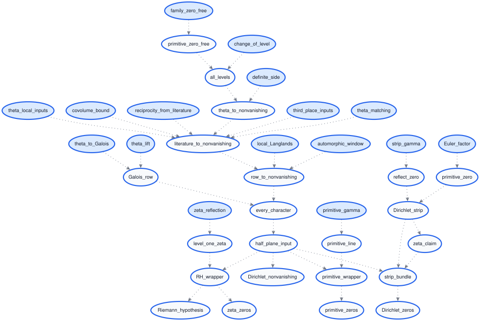

Blueprints and dependency graphs of the Lean formalization of the Riemann hypothesis and the generalized Riemann hypothesis for Dirichlet L-functions. They start from the original archive and follow it through successive simplifications.
Main.leanoriginalBuilt from the archive as published, commit e7c8972c

35 declarations and 37 edges. 14 are compiled with LeanArchitect; the other 21 are traced in the source.
Open blueprint
38 declarations and 38 proof references. Each reference is checked against its source line.
Open Verso siteAn interactive 3D graph of 42 project and 44 Mathlib declarations, with 204 arrows.
Open Proof MapThese graphs show the structure of the archive's proof. They do not verify it. Published stages are never changed; each simplification is added as a new stage. Sources: DeepTheory-Labs/GRH.